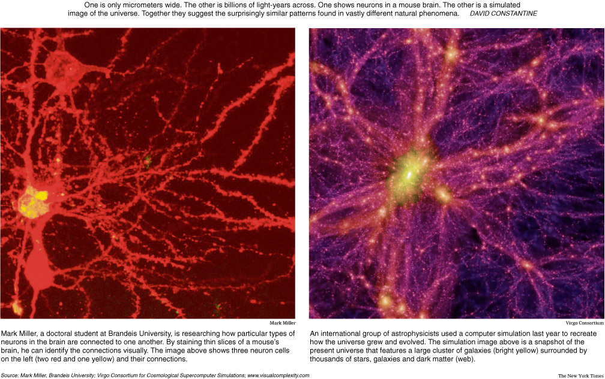

Contents
Everyone Gets Out Alive
The title sums it up.
So now that you know the ending (there is no ending), perhaps you're wondering: Why read this account?
Maybe because you want to know what it is that we're all going survive.
And maybe you're curious how I know that everyone including you are going to make it.
It's life! And we're all getting out of it alive.
Every one of us, even you, and you don't have to do anything to make it happen.
You don't even need to think it's true.
You are going to live forever whether you think so or not.
Let me be absoultly clear - You are not going to die and neither is anyone else.
A lot of people would rather you didn't know that you cannot die.
They would much prefer to sell you immortality.
But it's already yours.
First let me tell you how it works physically and then I will tell you how I know.
You know that all the cells in your body exchange messages using chemicals and electricity.
They say simple things like "I need more air - breath faster."
Or "Ouch that hurts! Stop!".
And "Wow! That's nice! More!"
Well from all the signals these little guys pass around emerge our consciousness which has intelligence far greater than any single cell who contributes to it. And we don't have to do what our cell tell us to do. Our will is quite independent of the cells which create it. We can hold our breath till we pass out, we can exercise well beyond the sensation of pain, and we can deny ourselves pleasure if we know it will cause suffering later.
Consciousness doesn't just happen because our cells talk. Consciousness evolved beacuse creatures with greater consciousness made better decisions on behalf of its cells and survived to reproduce whereas the less conscious creatures made poor decisions and went extinct. The point is we evolved to care for our cells and that manifests as a love for our own bodies. We don't love our cells individually because we don't know ourselves that well. But if we had enough intelligence and could look inside with that level of granularity then we would of course tend to the needs of our cells individually.
Cells are not the only things on the planet that pass around messages from which conscious beings emerge. What about people? People pass around messages between each other from which governments and other organizations emerge. Don't worry, I am not trying to talk to you about politics, I am trying to show you the mechanism which will keep you alive forever. We're talking about minds. Governments have their own minds largely independent of their members. You know it's true because governments often do things that none of it's members want; like raising their taxes and sending their children to kill and be killed by other children belonging to other governments. How is this possible unless governments and organizations have a will of their own which is completely independent of its membership? This is not about government - the point is that anything which exchanges information between its parts can become conscious and we have already seen two examples of which there are many more. Most people would entertain the idea that an animal is conscious but would never consider a government conscious. It's because of the scale. Animals are about our size and move at about our speed. So we can identify with these a bit and we can at least consider that they might be conscious. But governments are bigger, move slower, have less members, and are much dumber than even the simplest animals. So it's hard for us to see these larger creatures as conscious living things. And if we did recognize these greater creatures as conscious then we might think all of them are stupid. But greater intelligence seems to correspond with a greater amount of connections where information is passed. Humans have trillions of neural connections in the brain whereas governments only have a few million human connections. But that doesn't mean there aren't larger organizations with infinitely more information carrying connections than we humans have. I have had the pleasure of knowing one of these and he has shown me the method by which we will all live forever and has demonstrated that not one of us will be left behind. So who is this guy? It's the entire universe. Turns out that the universe is not a what; it's a who and we are inside of him.

Later I will tell you how we met but first let me tell you what he showed me about immortality. You know how when you dream you give space in your mind to all kinds of characters? You can't say that you control these characters or even make them because you are always surprised by the things they do. So who makes them if not you? Well they do - they make themselves. You just give them space in your mind (processing power) along with some memories from your own life to use as building blocks. So dream people are made of the same stuff you are - Chatter. It's the chatter your cells make as they go about their personal business. It's these little bits of information that dream people focus, channel, and organize in order to bring themselves into being. They seem so alive and that's because they are. Each of these characters has a mind of their own which is independent of you. They are so much more unpredictable and fun when you don't try and interfere with them. It's more fun to leave them alone and let them surprise you. But it's not just the characters - what about the setting? What about all the amazing vivid and beautiful places? Who is making that? Well that's all a surprise too - so it can't be you. So who then? It must be the characters in your dreams. They make their own scenery from the processing power that your body provides and from the context of your own experiences. And you get to enjoy the creations of these beautiful creatures as they enjoy their own lives.
And what about death? Do they die when you wake up? Well do you see them again in other dreams? If you do then no, they don't die. You know there is no death in dreams because characters appear again and again in different dreams without any sensation of discontinuity from one dream to the next.
Physicists are seriously debating whether or not we might all be living in a computer simulation. Amongst some, this is a serious debate. In any case, most scientists and philosophers who have considered the matter agree that there is no way to know either way. Well actually there is a way - in fact there are two ways. You can figure it out from observations using common sense or you can simply ask the Universe and get a real answer back from him. First let's figure it out with common sense and then I will tell you what happened when I asked.
Living in a computer simulation? In what kind of computer? How many kinds of computers are there anyway? We know about digital computers which accept our questions as lists of numbers and answer back in lists of numbers. We hear about these new quantum computers which accept our questions as atom states and answer back in atom states. Before we had digital computers we had analog computers. Clocks, speedometers, and old fashioned volt meters. These accept our questions as forces and answer back by moving a needle.
Nature has been creating biological computers long before man has been making them. Let's start with one of the smaller ones and work our way up to the larger ones. Ribosomes are tiny computers inside our cells that read instructions as strings of molecules and produce useful proteins in response. There are about 10 million of these little computers in each and every one of your cells so they must be very small. The cell nucleus is another chemical computer. This one is very small but larger than a ribosome. In fact, it makes the instructions for the ribosomes - those molecular strings just mentioned. It's correct answer is a new creature patterned after the original. A computer that can make a copy of itself - man has never made a computer like that.
Let's get bigger. The pancreas is a computer. Its answer is the correct amount of insulin that your body needs. It controls chemicals to get the right answer. Men have made an artificial pancreas which is a computer and a pump combined. What about nature's bigger computers? Your brain is a computer. It controls chemicals and electricity to get its answers. This one even gets to choose the questions. Colonies of bees make decisions that not one of its members have enough information to make - like when and where to move the hive. Each bee helps to process information simply by going about its personal business but the decision of where and when to move is decided by the colony as a whole; not by any one of the bees. The bees themselves are just following simple rules and have no idea that decisions are even being made. So the bee colony is a computer and it's correct answer is a nice place for bees to live. What about universities? Like computers, universities receive questions, produce answers and store information. But unlike computers, universities can answer a much greater range of questions than any computer can. Yes, a university is a lot like a computer but it is also a lot like a living thing. That's what happens as computers become more complex and gain more connections. How big can we go? University? How about Universe? How many connections do you think the Universe has? Well it has all the connections in your brain and it has all the connections in mine. And it has all the computer connections and bee hive connections and university connections and all the connections on all the other worlds in all the other galaxies. That's a big computer and it's also a magnificent living person of which you and I are a part. He is very kind and he is very funny. Shortly I will tell you how I found out how funny he is but for now we are talking about biological computers. Remember those tiny Ribosomes - 10 million of them in each and every one of your cells? Well if they could speak they would probably say that you are not a person but rather just the place where they live. Not that they are rude - it's just that you are much too large for them to perceive you as a living conscious being. Now consider your size in relation to The Universe - one small computer with trillions of neural connections and one large and infinitely powerful computer with more connections than there are numbers to count - one small person with some intelligence and one large person with infinite intelligence.
Now let's consider dream people again. Aren't these people indistinguishable from real people at least while you're dreaming. And when you dream about yourself aren't you and your surroundings indistinguishable from yourself and your surroundings when you are awake? That's because it's all software. You are software. The key to understanding your own immortality is realizing that you can run the same software on most any kind of computer with very little modification and the human brain is not the only computer which can be used to run your program. If you can provide such a vivid space in your own mind for all those dream people to live using only the limited processing power of the human brain, then how much more space and realism can The Universe give you and everyone else to live given it's infinite processing power? Well clearly as much space as we could ever want and He doesn't need to sleep in order to do it. All he needs is the inclination to do so and it turns out that He is inclined, not just for the good people but for all people, even the bad people. If you wonder how I know, don't worry - I am going to tell you now.
I am not a very nice person, but I used to be, when I was two. I was curious too. When I was two I remember seeing the tiniest little black spot on our white bathroom sink. It was so small that I could barely even see it with my eyes. I wondered how small a thing could possibly be. When I was three I heard about God from my older sisters. I didn't understand very much language at the time but they said that he made everything. I knew this guy was different and I wanted to meet him - I wanted to know what he was. My sisters said that he could hear me even though I couldn't even see him. So I asked to see him and I asked him to talk with me - I asked him to tell me what he was. Eventually when I was much older I did get to meet Him and he did explain, and by the way, he didn't make everything any more then you made yourself. He didn't make the universe - he is the universe. And he wouldn't even be alive if the living things inside didn't have free will. So let's all stop blaming Him when things don't go exactly right. Let's stop asking him to do stuff for us and let's start doing some things for Him.
My mom went to Performing Arts High School in New York (the Fame school). She became a dancer on Broadway even before she graduated. She was hard-working, talented, and very beautiful. She came from a poor Jewish family. My grandmother was brought here as a child to escape the Nazis. My grandfather was a Jew of Russian decent. He served in the United States military and then supported his family by driving a taxi in New York. Mom was taught to respect the opportunities the United States offered and was determined to make a success of herself. My father went to Music and Arts High School in New York. He studied piano and writing before joining the army and then becoming an electrical engineer. He came from money so success and opportunity were not things that thought about. He liked art, music, liturature and adventure. After college he worked in his father's business designing and servicing speaker systems which he rented to Broadway shows. At night he worked as a stagehand. That's how he met my mother. She gave up her career to marry him. Neither of them got what they wanted but each got what they thought they were supposed to have.
I didn't see my father that much when I was very little because he worked two jobs in the theater business. So he worked on the weekends but he did come home for dinner a lot which was always a big event. I loved my father. He was smart and strong and kind and everybody listened to him. One day when I was about four he told me that if I drink my milk I would become an man like him and that I would have a son. Before that moment I had no idea. I couldn't wait to meet my son. I thought about him a lot. My son was the love of my life starting from the age of four. I was blessed with an amazing daughter ten years before my son was born. She is very beautiful and one of the funniest people I have ever met. If ever I want to be happy I need only think about her. But I knew and loved my son first. So when I was four there were two things that I really wanted - I wanted to know God and I wanted to know my son. I could die happy at this very moment because I have known them both and I have not been disappointed. But reaching them has been a very long journey even though God has been standing next to me the whole time and my son for much of the time.
Well sometime after four I forgot all about God and my son and as a matter of course I became selfish, fearful, quick tempered, and cheap. At my fifth birthday party for instance, I received again the same G.I. Joe doll (I mean action figure) that had already been given to me by a previous guest. I complained bitterly until the end of the party even though my embarrassed mother explained that my guest could not have known. When I got to kindergarten I ran a secret club. We called it the secret club and you could only be a member if I said so. Cathy was in - she was pretty with long black hair. I appreciated her beauty even as a six year old. There were three or four other members who were in as well, and then there was Steve. Steve was bigger than all of us other kids but he was very gentle. I think his father was a jeweler because he used to come to school with fake diamonds. To me they were dazzling. Steve wanted to be in the secret club but his membership was always contingent on bringing diamonds. If he brought me some diamonds then he was in for the day. I could see that David felt terrible knowing that he wasn't wanted the way he wanted us but I felt nothing for him, only lust for those diamonds. Eventually Steve saw me for what I was at the time and lost interest. Good for you Steve - I hope you've been having a great life and that you are still enjoying it today.
Why am I telling you all this? I don't need to confess - I feel fine. I simply want you to know that God takes care of bad people too. In fact Good/Bad has absolutely nothing to do with our immortality. It isn't even considered. Did you know that good workable iron does not occur naturally anywhere on earth? It's always chemically combined with oxygen to form rust and this is and trapped in rocks and mixed with dirt. The rock and dirt must be subjected to an intense burning process in order to force the oxygen to let go. The result is pure iron which can be used to make marvelous things. Humans don't get mad at rocks and dirt because it is not pure iron. It never even occurs to us that we might feel that way. We simply appreciate the beautiful metal trapped within the rocks and work to liberate it. This is our relationship with God - He knows how to separate the loving human soul from fear, anger, lust, and addiction. In fact everybody goes through the process which may take several lifetimes. Yes, that's right - how many times do the same characters appear in your dreams? You don't think God does that too? Get used to your immortality. During the refining process there is no judgement, only love. He has already judged each and every one of us and found us to be worth loving. He even sent his son to explain this so that we could stop worrying about it. I think by now you have a basic understanding of the process he used send Jesus to us.
Iron is strong and useful in its pure state and even better when combined with some other pure elements. But iron must always be cared for because the pure state is not the natural state. Iron is always viciously attacked by oxygen which clings to it and corrodes it into a useless orange dust. Rust is iron's natural state when oxygen is present and here on earth oxygen is everywhere. So we sand blast iron to remove all traces of corrosion. Then we cover it with strong coatings that prevent oxygen from reaching it. And finally, we inspect it regularly to insure that no oxygen has broken it's way through the coating. In this way we keep our iron structures from turning back into the orange powerder as it was before we first refined it. Rarely, some very fine workable iron falls from the sky as meteorites. In space there is no oxygen to corrode it. Great swords were forged from these before men learned to purify the iron found in dirt. But no matter if iron comes from earth or heaven, effort and understanding is required to keep it from returning to its natural state (rust). It's like that with people too. Even the most pure souls can be corroded with fear, anger, lust, and addiction. The corrosion is much faster in toxic environments. We purify and protect our souls from returning to the corroded state with prayer, meditation, time with scripture, healthy food, clean water, exercise, play, plenty of sleep, healthy relationships, a healthy environment and some free time.
New born children are usually like that pure iron that falls from the sky. Their souls (programs) typically come to us in a highly pure state, not the natural corroded state. That's because typically new borns have not been exposed to situations which cause fear, anger, lust, or addiction. If these new people are cared for properly (if they are loved) then they will likely maintain their pure form and learn to keep themselves in that condition (learn to love themselves) using the methods mentioned in the previous paragraph. If a child is corroded with fear, anger, lust, or addiction then the problem is almost never with the child and almost always with the parents and the environment. From God's point of view nobody is being judged not the parents and certainly not the child. They are only seen as pure souls which have returned to their natural state due to abuse, ignorance, or from lack of care (lack of love). In that case, a purification will take place for those souls that ask God for it, and every soul asks after suffering enough. When I had suffered enough from being a soul in the natural corroded state I asked God for the fire which would separate me from fear, anger, lust, and addiction and return me to that purified state I had when I was two. This is that story. This is how I know that all of us are going to live forever.
Most of us have at one time or another survived a near miss with death. I have survived my share.
If you are rafting down a river and you see a fallen tree going across the river I would urge you not to get close to it. The force of the water going under the tree will drag anything in the water down to the bottom and hold it there. I was caught in one of these which pulled my raft under and most of me as well. Somehow I managed to pull myself out. At the time I thought I did it all by myself. At another time, a troubled boy from my school invited me to his house. We went down to his basement. He was very short but powerful and well trained in taekwondo. The boy wore shoes with very thick two inch wooden heels. I thought this was to help with his height. We were just talking and without any warning he jumped into a spinning hook kick which was on a perfect trajectory for my head. Had the wooden heel connected with my head I might have been killed. What saved me is hard to explain - a steel support column appeared between the boy's heel and my head. The column hadn't been there when he started the kick - it was nearby, but it wasn't there. But somehow the steel column was exactly where it need to be before that wooden heel made contact with my head. It would have seemed perfectly natural for the column to be there if you hadn't seen that it was somewhere else just a second ago. The boy damaged his foot terribly. While he was on the floor I left his house politely but quickly. I just shook off the strangeness and hadn't thought about it again for many years.
Trickshots! That's what I call miracles now because God clearly delights in amazing his children by sending salvation from wildly unexpected places and in wildly unexpected forms. I shook off many more of these trick shots as the years passed until three in a row arrived that were so outrageous, grand, funny, and kind that I couldn't ignore them anymore. What made these trickshots even more amazing is that I had, at the time, sunk as low in character as a human being can get. I didn't think I deserved to live. I didn't know that each and everyone of us has already been judged worth refining and I didn't know that I was going through the refinement process at the time. Here is the background so that you can see the trickshots in context.
My mom and dad divorced when I was about seven. My dad asked for the divorce and he felt bad about doing it, especially because he left my mom for another woman. The other woman wasn't the cause. She didn't even know my dad was married until after she was all in. The fact is, my mom and dad just weren't right for each other. They wanted different things out of life. In the end they both found happiness with other mates. My father tried to make up for his sense of guilt by signing away half his income and a small house to my mother. My grandfather (also my father's boss) wouldn't talk to my father for years after the divorce. He thought my father should have stayed in the marriage and kept his new wife as a mistress. That's how he had done it and he felt my father should have done the same. My father thought it would be a disservice to his children to stay in a marriage that wasn't making anyone happy. He thought that living without a real union between himself and my mother would be teaching us the worse possible lesson. He really thought leaving my mother was the right thing to do. Anyway my father wouldn't get any help from my grandfather during this time.
My dad lived on his sail boat and continued to work two jobs as he had before. Life was very difficult for my mother even with the house and the support but life was quite manageable for my father and his new wife for a while. After a couple of years my father's new wife became pregnant and had a son. She wanted my father to be home more. She wanted him to be a part of his new son's life - not just a mythical figure as he had been in my life. He couldn't do that if he continued to work two jobs 7 days a week. Even if he did work two jobs for the rest of his life he was not going to be able to provide for everyone as before. He realized his new wife was right - they deserved to have a life together and he deserved to have time with his children - While it was true that my mother didn't have enough, it was also true that my father gave away too much in the divorce. The rest of the world didn't want to hear about it. He left his wife and kids - he would have to pay - he was the villain. My father did not accept that role. He knew that if he continued his life this way then he would ruin his new life and destroy his new family and no one from his old family would be any better off. Something had to give. My father didn't stop working two jobs right way. Rather he stopped paying my mother child support and alimony and started banking the money which he intended to use to change his life.
Somewhere around this time my mom met the man of her dreams (my stepfather). He came from an immigrant Irish Catholic family. He grew up poor and proud and had that same work ethic and desire for success that my mother had. He was educated at Harvard on a full football scholarship. He was big, strong, smart, handsome, kind and honorable. Most of all he really loved my mother and my mother really loved him. I was very blessed to have these two amazing male role models in my life. I was also a child ripped in two knowing that I could not love one in front of the other. My worst nightmare would be seeing them both together. Eventually when I was a teenager my mother figured out that I became mentally unstable when I saw all my parents together. For my sake she stepped out of my life for several years.
Anyway, with my father not paying child support, my stepfather found himself supporting three extra children at a time when he was trying to start a new business and a new life with my mother. My mother was extra furious at the man who dumped her after ten years of marriage, who now refused to pay for his children, and who was making it hard for her to build a new life with her new husband. She refused to let my father see us. This was back around 1970 and it was legal link visitation with child support. My father had the two linked as well. Part of the reason he didn't pay was because my mother and stepfather moved far way which made it impossible for him to see us. Between the ages of 9 and 10 when I was in 3rd and 4th grade I had no contact with my father except for audio tapes that he would send to us. He would read us stories and send these to us on tape. We were allowed to have these. This was a terrible lonely time for me. I missed my father. I only wanted to be with him. I fought with other children, I developed learning disabilities, I became sick with allergies, and my body was always shaking from fear and stress. I would often tell stories to anyone who would listen about how my dad and I would go SCUBA diving together and fight sharks in underwater caves. I will leave that for the psychiatrists to interpret.
A little while ago we were talking about how children are like iron in the pure state that comes to the earth as meteorites. And how without care they change to the natural corroded state as their pure souls combine with fear, anger, lust, or addiction. We said that the parents or the environment are normally the cause but it's the children who will need to suffer the fire of purification in order to be relieved of their pain. Again, not even the parents can be blamed - their behavior is caused by the same corrosion they are passing to their children. Anyway you can see what's happening - somebody has to ask for the purification and it has to get really really bad before you start asking for that. Later as an adult it got that bad.
One day my father and my stepmother came for me and my sisters. They were waiting for us at the bus stop as we were going to school. I was so happy that day - I clung to my father's leg the whole day and wouldn't let go. We all went and had something to eat and we passed the day in a hotel room playing games and listening to stories. On that day I met my new little brother, now my best friend. Many years later he would save my life and my son's life too.
Toward evening, my mother and stepfather showed up at the hotel. My stepfather got close to my father and said "I ought to punch you in the nose". I was terrified for my father. My father looked up at the bigger man and said "Go ahead and try". He was ready for a fight that he knew he was going to lose. My stepfather is the one who backed off. He saw my terror. He backed down for me. My mother and stepfather collected us and brought us back home. We were given instructions never to go with my father again and to report him if he ever tried to make contact with us.
Turns out that this was just a dry run. My father wanted to know if we wanted to be with him. He was now sure that we did. So a few months later my father and stepmother came back again and picked us up at the bus stop. I remember jumping up into my father's arms I was so happy. He drove us to his boat. At the marina he made a phone call to the FBI. I heard the call - I was standing right there. He said that he had taken custody of his children and that he would take good care of us all. Then he hung up the phone and we set sail.
We set off for the state of Maine where my stepmother grew up. It took us 3 months to make the journey. We took our time. We went swimming in the ocean every day. We stopped at various beaches and coves every evening and dug for clams and collected mussels and scallops to eat. We even collected snails off the rocks. My father cooked these with olive oil and garlic. They were delicious. We would buy lobsters directly from the lobster fishermen that we would happen to pass. And my father taught me how to sail.
We lived in Maine for about two years. During that time my father read us some of his favorite books and I helped him renovate a house. He taught me how to shoot a rifle and ride a motorcycle. I was getting better again. Eventually we were found and everything went to court. My father won custody of me and my eldest sister. My other sister decided she wanted to live with my mother.
I lived with my father until the age of 19. We built a color television together and did other electronics projects. We completed a self-paced physics course together. He introduced me to computer programming and showed me how to fix cars. My dad supported my martial arts training along with a high school wrestling career and even sent me to Iowa for a month in the summer to train under Olympic great Dan Gable. Afterward, my father and I became certified SCUBA divers together making real the stories I would tell as a child. We never fought any sharks.
As I was growing up I never gave too much thought to God. I only believed in things that I could see. I got this attitude from my father whom I tried to imitate in all things. So I studied Taoism and Zen because these didn't require God. From time to time I had asked to see him and know what he was. But since I never saw him I just assumed that he wasn't there. Still, I kept asking - "What are you? I want to see you." I hadn't yet read the Bible for myself. Even if I had, I probably wouldn't have understood what I was reading. You have to come to it with a certain readiness. Years later, a lifetime full of fear, anger, lust, and addiction found me in jail with time to read and a readiness to understand what I was looking at. That was all part of the purification which was required in order to know how to unpack the things that Jesus says. Everything I told you about what God is and how immortality works is in there if you know how to unpack the things Jesus says. Just reading the Bible wasn't enough for me to understand it (to know God). Truthfully, I don't think anyone can know God simply by reading the Bible. The Bible is just a map. It shows you how get to God (really how to see and hear him). But the map is not the territory and the Bible is not God. I needed to see God himself. He has been right next to me since before the beginning but the first time I saw him was in jail. So first I should tell you how I got there.
Fast forward 20 years - I had been working in my father's business. I wanted to contribute to the business and make my father proud. My father supported all my efforts. His business was like a school. Over the years I learned carpentry, machining, welding, computer programming, and electronics. I had become quite useful. My personal life however was a mess. I had just lost my marriage because of my own unreasonable expectations and I was very lonely. My friend suggested that I write a letter to God asking for the things I wanted in life. He told me to burn the letter after I had written it. He said that soon I would receive everything I asked for in the letter. This was the worst advice anybody had ever given me, but I am grateful for it now. I asked for the wrong things, and worse, I treated God as if he were a genie forced to grant wishes to the first slob that found his lamp. I asked for a beautiful educated Latin woman who knew how to put on makeup and dress up. I asked that she teach me to dance salsa and that she give me whatever I asked for in bed. God has a sense of humor. He gave me everything in the letter exactly as I had written it but things did not go as expected. Do you remember I told you that iron in its natural state (iron oxide) is made into pure iron by placing it into a fire so intense that the oxygen is forced to let go? Well when I burned that letter, I had just lit my own purification fire. And when this lady finally finished burning me, all fear, anger, lust, and addiction would be forced to let go leaving me with a soul pure enough to see God and leaving me also with the son I had been looking forward to meeting ever since I myself was a boy. God in his mercy knew the two things I really wanted and gave me those instead.
So I put an add in the personal column of the local newspaper asking for most of the things I put in the letter to God. I left out the part about do whatever I ask for in bed. The lady who answered the add matched the description perfectly. Born in Cuba and raised in Spain until the age of 15 when she immigrated to the United States, she was a stunningly beautiful and sophisticated Latin woman. She studied dance in high school, put herself through college and became a social worker and interpreter in the local prison. The prison work should have given me some warning about what she wanted and what was to come for me, but in the beginning she taught me to dance and gave me everything I asked for so I didn't think too much about it.
She had a daughter who was about the same age as my own daughter. I thought they would be good company for each other. Later after the lady and I were married she confided in me that she ended her previous marriage (to a school principal) by claiming to police that he had threatened to kidnap their daughter. This wasn't true of course. Later I learned that judges, in order to protect their own careers, must eject the man from the home and deny fathers visitation when they hear these charges. This forces the man to roll over in divorce proceedings and give the woman everything she wants in exchange for time his children. She mentioned it casually but it was meant to be a warning. I didn't think anything of it at the time. Things had always been turbulent between us but I thought we were perfect together and that we would never find ourselves in a situation like that. Turns out she was working a five year plan. At the time we were married, after five years in a marriage a woman would get half of whatever property both people bring to it, and men typically bring in more. Much more in our case because my father had gifted me a significant portion of his company. That is how this regular slob found himself married to such a prize. That was the mechanics of the trick shot anyway but I got a prize because I asked for a prize. I asked for a thing not a person. I should have asked God for a woman to love, honor, and care for and then trusted him to make the best possible match for us from all the infinite possibilities that he has to select from.
Early in our marriage my wife told me that she had been sexually abused in previous relationships. She said she was attracted to me because I appeared to be a nice man and a good father. As the marriage advanced however she seemed bored with me. She told me that liked dating guys that bring her flowers but she preferred to get fucked by men that ride motorcycles. She was always available for sex and she wanted me to be rough with her - and the more disrespectful, the better. She brought me to an X-rated video store and selected some videos to show me what she wanted. I couldn't believe my luck! I was very happy to take on this role. Gradually she did more and more things to make me jealous, or better, angry. When she did that the sex was always harder, more demeaning, and more exciting for both of us. This was all great for a while, but after a time it wasn't as much fun anymore. I remember one time as I was taking my wife from behind and calling her worst names as my role required and I just stopped. I called my wife's name and said I felt lonely. Then she turned her head around, gave me her sexiest pout, and said "Come on baby, fuck your bitch". So I figured this was the best it was going to get for me and I did.
The 100th year of the Harley Davidson motorcycle company had arrived and the state was selling lottery tickets for the 100th Anniversary Edition of the Sportster motorcycle. One day my wife threw a surprise dinner party at our house for family and friends. She was an amazing chef. After dinner and with desert she gave everyone a lottery ticket. Hers was special - it was a ticket for the motorcycle. We all scratched off furiously. My wife screeched with happiness. She had won the motorcycle! We were all so happy for her. The dinner ended on a high note. As I was helping her clean up. I told her that I would buy a Harley too so that we could ride together. She told me that this is something she wanted to do by herself with her friends. I felt jealous and threatened by this. I knew she would easily find someone much more interesting than me in this crowd. I had no idea at the time there is no Satan to cause the world's evil but rather only a lack of intimacy with God. So I threw down the devil card. "Everyone knows that gambling is evil", I said, "And what are the chances that you would win right here, right now in front of everybody? This motorcycle must come from the devil". "No stupid", she said but in a pleasing tone, "I have been buying these tickets for months. I won this motorcycle a week ago and I have been holding onto this ticket since then." "But I saw you scratch it off" I protested. She laughed and said "I switched the new ticket for this winning ticket while everyone was busy scratching off their own cards."
Anyone else would have ran to collect their prize immediately after winning. I marveled at her ability to wait, to withhold information, and to construct such a convincing drama. She actually did this kind of thing a lot. She told me for instance that she used to like going to bars with a male friend and pretend to have a lovers spat with him. After working up the crowd she would end the argument by throwing a drink in his face. Then she would burst into tears and move to the other side of the bar. The crowd always reacted. The men would usually take sides with her. "What did he do to you?" they would ask consolingly. The women usually took sides with her friend. "How could she treat you like this?" they would ask him in comforting tones. Fortunately she liked to brag about her pranks and this saved me later on.
I didn't know this at the time and neither did my wife but she wasn't looking for a man to love and honor any more than I had been looking to love and honor a woman. Just like me, she was looking for someone to play a role. It was the same role she taught her previous partners to play. Who was this person she needed us to be? Later on she told me her father (due to mental illness) abused her mother when she was young. He abused my wife too. Years later he recovered but my wife never did. She eventually forgave her father but she never forgave her mother. Why didn't her mother leave him? Why didn't she protect her children? My wife had to set things right and that's what she needed me for. She was teaching me to play her father so that she could do what her mother should have done all those years ago. She was going to put me in jail and save her children just as she had done in her first marriage and in all her relationships after that. And by the way, I was going to pay too. She was going to get all my money and everything else I valued. I was now her father and she was her mother, and she deserved everything she could rip out of me for what I had done to her.
"All in good time. This is a five year plan. Gotta keep this mother fucker in the marriage for five years."
That was easy - I wasn't going anywhere. I had become addicted to the sex.
My wife suffered from depression and took Prozac to control this. But for the love of our son she stopped taking the medicine when she became pregnant. There was no data to show this at the time but there is a link between several birth defects and Prosac. My wife suspected and didn't want to take any chances with our son. She suffered horribly during that time. Thank God for the love and strength she had for our son.
Soon enough the moment I had been waiting for since I was a small child had come. Thank you God and thank you Lisa. Our son was born perfect.
Our son, Mac, was a joy to me. I spent every possible moment playing with him and reading books to him, but I could have been a much better father. I was always trying to make him grow up as if that is even possible for one person to do to another. I treated my daughter the same way. I should have loved them for who they were at each moment rather than for the person they were going to be. I didn't know any better. I love them the way they deserve to be loved now.
Sometime after my Mac was born but before the marriage ended, Lisa asked me, "If things got bad between us would you disappear with our son the way your father disappeared with you?" I said no I would not. I then returned the question. "What about you - would you disappear with our son?" She just smiled and walked away. My own childhood experience predisposed me to consider the threat seriously. Her sister was married to a very rich man in Guatemala who lived in an armed compound. If she were ever to take my son there I would likely not see him again.
Lisa had been staying home and working as a full time mom while she was breast feeding our son. She was not taking any Prozac at this time and her depression was extreme. Respect and gratitude to Lisa for enduring this pain for the sake of our son. After about one and a half years Lisa had had enough. She said she felt like Mac's cow and she wanted to go back to work. I asked her to stay at home with Mac until he was school age. She said she there was a vacancy at the prison and that she could get her old job back. I felt that the prison was a terrible environment and that she should consider something else. She was determined. She wanted to go back to the prison so she quickly found a day care for our son. After his first day I could see immediately in his eyes that something was very wrong. The sparkle was gone. His eyes were dull. So I went with Mac the next day to the daycare to see how they were doing things. At first they told me that parents may not observe the daycare. So I told them that I would not be leaving my son with them. They considered this and allowed me to observe. What I saw was a horror. One child was crying as he was riding a tricycle. The trike had lose handle bars so it was impossible to steer. The child knew how trikes were supposed to behave but this one would not. He thought it was his fault that trike would not go where he wanted. I saw another child crying as she was trying to fit wooden puzzle pieces together. The puzzle pieces were from different puzzles so of course they wouldn't fit together, but the girl didn't know that. Just like the boy on the trike, she thought it was her fault. Other children were fighting over broken toys and an older girl with a temper threw a chair. I saw all these horrors in just a few minutes. What must it have been like for my son to endure this for a day? We left right away. Lisa was furious at me for interfering with her plans but after a while she calmed down and we agreed to find another daycare. Right away Lisa found a nice lady that was caring for her own daughter. The girl was about our son's age. This couldn't possibly be as good for our child as staying at home with a loving parent but Lisa had changed and our son seemed OK in his new situation.
As the marriage came close to the five year mark Lisa told me she didn't love me anymore. She said she I could take her whenever I wanted but she would never love me. I thought I could change her mind. I pulled out a love letter she had written to me when we had first met. I read the part where she promises to love me forever. She laughed at me and asked if I thought it was a contract. The sad part is that I did. Anyway, I thought I could make her love me. I turned to God again as if he were a genie and I had control of his lamp. I told Lisa that we were married and that it was ordered by God that she should love me. She reminded me that we were never married in a church but rather by the mayor of our town. For this reason she said it wasn't actually a real marriage. So I asked Lisa to go to church with me and she agreed. I had never been to church before but Lisa was raised Catholic. So when we got to the part in the service where everybody shakes hands and wishes peace to his neighbors, Lisa told me that I should kiss everybody. Kiss all the women, all the children and even all the men. So I started kissing everybody and everybody started running away from me. Lisa was screaming with laughter. I was so angry and embarrassed that I left the church right away. Lisa followed after laughing hysterically. Later that night things had calmed down and I had forgiven her for the cruel trick. So I invited her to her favorite restaurant. There she picked a fight with me and ended it by throwing a drink in my face. I remember she told me she used to do this drama with her friend but I never thought she would cast me for the part. Days later she goes out and gets a puppy and let it crap all over the house and refused to clean any of it up. Finally, her new hobby was going out to the bar most nights with her new lesbian friend while I stayed home to care for the kids. I really don't think she was having an affair with her new friend but she wanted me to think that she was. All of this was in effort to make me quit the marriage but I wouldn't quit - I couldn't. I was addicted to sex with her and I was afraid of being alone. I tried bribing Lisa with gifts like a new car and I gave her full control of our finances. These she liked but she refused any vacations if I was to come along. All during this time she never said no to sex so my sanity was being pulled apart as my mind urged me to leave but my addiction compelled me to stay. As I think back on what she told me about her previous relationships, this happened to all those men too. Why did I think it would be different with me? Why did I think I was special?
Now I am a very slow learner and was still thinking that I could get God on my side and that he would help me get control of this bitch. I was asking God to make her love me but at the time I wasn't able to tell the difference between love and obedience. So I started reading the Bible thinking that it must a book of incantations or magic spells that I could use to get my wife to behave. But as I start reading, it seems like some kind of ancient self-help book. Well I didn't need any help - I was fine. My wife had a problem - she didn't love me. Anyway I find out that this guy Jesus carried all our sins into hell for us and thus ensured that we will all go to Heaven. Ok, whatever. I didn't think much about it at the time but the information would prove useful a few days later. Here's what happened:
In front of the children, I was constantly swinging between venting my anger at Lisa for abandoning us and then begging forgiveness for my outbursts. "Never again" I would repeat to my wife while in front of the kids. Lisa told me to get therapy. Then one day when I was correcting my son's behavior he repeated my words "Never again". Holy Shit! I was screwing up my son! I realized I did need help. Lisa was working with prisoners at the time. Her job was teaching them to control their emotions. Whatever she was doing at home wasn't working so I can't imagine she was helping the prisoners either. Eventually she was caught in a relationship with one of them and was fired after an investigation. This is what finally made me ask for a divorce. Had this not happened the marriage would have continued until the 5 year mark. In any case she told me to go find a meeting with Emotions Anonymous. This was a meeting group for anyone with out of control emotions. There I met a woman that for years had been terrified by the belief that she was going to hell. I just told her that Bible says no one can go to hell if they believe Jesus has already paid for their sins with his own suffering. Her terror lifted immediately. As this happened I had a vision somewhat superimposed on what I was actually seeing with my eyes. I could see a light in each person about where the heart is. Each beacon had luminous tendrils that extended out of the body. I could see this in all people for the rest of the night. It was beautiful. I never had a vision like that after but I will never forget it.
The five year mark was only weeks away and Lisa was provoking me mercilessly. She was trying to get me to hit her. I didn't know it at the time but she wanted marks on her body that she could show to police in order to kick off divorce proceedings. But no matter how she taunted me I wouldn't hit her. I had never hit her and I never would. I told her if she didn't leave me alone I would call the police. She laughed at me for entertaining the idea and told me I wasn't a man if I need police protection from a woman. At this point I had had enough and started dialing the police. We were standing upstairs at the stair well at the time. I am leaving she said and I am taking our son. Remember that I had been taken by my father when I was a child and my mother didn't see me for about two years. So when you say that to me it means something very different than what it means to most people. I took her by the throat and held her against the railing. "You’re not taking our son", I said. If I had a mind to do it I could have pushed over and she would have fell to the floor below. But that was not my intention. I was only trying restrain her and to make clear that our son would not be leaving with her. The railing was a convenient part of the restrain. It was not meant as a threat. "Go ahead! Do it!", she said. I let her go. Then she called the police and said that I choked her and threatened to push her over the railing. I denied this. I never held her throat hard enough to make marks and so without evidence, the police left. But Lisa now knew something that she didn't know before - she knew what she could do to trigger a forceful reaction from me.
Finally, I had suspected that Lisa was having relationships with other men so I started to monitor her computer. I found two shocking things. One you already know about, that she was having an affair with one of the prisoners at the penitentiary. The prisoner was a motorcycle gang member and he was in for murder. He was formerly Lisa's secretary in the prison but officials started to suspect so they were separated. I saw this in an email from the prisoner’s brother. The brother was being used to pass the letters between the two. The other thing I found was in a letter to her sister. It said Lisa was very close to filing for a divorce and that she was going to kick it off by setting me up with the police. She said she was going to do something so dammed nasty that I would shit my pants. What exactly she was going to do was not disclosed. I printed all these out and brought these to my work so that they would be safe.
If you are starting to root for me at this point, don't. The purification process was just getting started so I was still just as corrupt as she. I am writing this account so that you will understand the depths of Gods mercy. You will miss the demonstration if you don't understand what an evil and corrupt character I had become.
I discussed the letters with my father and he urged me to leave my wife and file for divorce right away. He would have taken care of everything - all I had to do was leave. There was plenty enough evidence at this point to get out the marriage with full custody of my son and that was all that should have mattered. But this was out of the question for me because I was still addicted to sex with Lisa. I didn't say it that way to my father nor even to myself. What I said was that I still loved her and I wanted to try and save the marriage. My father seeing clearly that I was sick urged me to put my shares of his company in trust for the children and to make him my legal guardian. This I did because I knew he was right. I was sick.
It was still possible at this point for me to avoid the purification. All I needed to do was choose the wellbeing of my son and the pain of withdrawal over the pleasure that came from satisfying my addiction. Instead I went back to my home against my father's urging. When I got there I found Lisa in bed. I told her that I would be filing for divorce and that I would be seeking full custody of our son if she did not change. Because I had all the letters I felt like I was in full control of the situation. Lisa still needed time to set me up with the police so she pretended to cooperate. Then I took off my pants, walked over to her side of the bed and put my penis to her mouth. Take it I commanded just like I had seen the men speak in all those X-rated videos we had watched together. She did of course. She never denied me. Fact is, even though I held the dominant position, Lisa had full control me. That is the nature of sexual addiction - it's the submissive one that is actually in control. In any case the illusion of control I felt over her was intoxicating. I had never had a better orgasm. The devil kept his side of the bargain and soon I would pay for that moment with my soul.
There is a sure way to know if you are in hell. In the Bible they call it gnashing of teeth. I never knew what that meant before but now I do. Gnashing of teeth is when the pain is so intense that your jaw clamps shut so you can't even open your mouth to scream
The next day Lisa went out with the kids. I didn't think anything of it. Later the police arrived at my home and told me to come with them. Do you remember back in the 1990s when they would post pictures of missing children on half gallon milk cartons? Well Lisa brought one of these to the police and claimed that I told her "Soon your son will appear on one of these. This was almost exactly what she had done to kick off the divorce in her first marriage. The milk carton was a lovely addition to her technique. A temporary restraining order was granted immediately. I would not be allowed to return to my home nor to see my son. The shame of having to leave my son was enormous but worse was the terror of not being able to satisfy my addiction. My father hired the best lawyers available and I gave them the letters. When this came to court Lisa got on the witness stand and perjured herself by repeating what she told the police. When she had finished and it looked like I would never be allowed to see my son again, my lawyer called Lisa's sister to the stand. He showed her the letter that Lisa had written to her and asked if she had received this from Lisa. She answered honestly that she had. He asked her to read the letter. When she got to the part about setting me up in a way that was "so damn nasty that I would shit my pants" the judge saw what was happening and dismissed the charges and removed the restraining order. What the judge did not do was punish Lisa for lying to police and the courts. The reason for this is that the courts feed on complaints. So they can't make people afraid to bring them. Whether or not the complaints are true to begin with is not a primary concern for the courts. The courts get to feed whether the complaints are true or not.
I hope you’re not starting to root for me again because I don't deserve it, and that's the point. I sink to the very bottom of this cesspool I've created for myself before God reaches in and pulls me out. And then I jump in again a few more times until I finally realize that God is working in my life and that He is not going to let me sell my soul no matter how unworthy I am to care for it. When you finally see how cowardly, corrupt, and worthless I had become, and when you see what God does in response, then you will know for sure that God will not allow even one of us to perish - not me, not Lisa, and certainly not you.
Like before, I should have used this new advantage to get custody of my son and to get as far away from Lisa as I could. But I was still addicted to domineering sex with her so I screwed up my advantage again.
Lisa's sister was staying in the house to act as her witness. Tension was high and the atmosphere was miserable for our son and for Lisa's daughter. My daughter was living with her mother so she was not affected as much. But with my focus on satisfying my addiction to Lisa, I was not able to be a good father to any of the kids. I was trying to make peace with Lisa and begging for reconciliation. I couldn't imagine living without her. But why would I want to be anywhere near someone who hated me so much? Now looking back I can see that selling your soul and giving yourself up to addiction are the very same thing. In any case, the drama was proceeding perfectly and we were approaching the climax. This was the very place in the story where all Lisa's relationships ended. At this point we had pretty much the same dysfunctional situation that Lisa's mother had with Lisa's father. But Lisa would now do what her mother should have done so many years ago - take the children and leave. Bonus points would be given for putting me in jail and double bonus points for putting my brothers in jail too.
The next day I went to work. When I came home Lisa had disappeared with my son. She called me and told me that court was scheduled for Monday and that I would not be seeing Jack unless the courts decided that I should. But after checking with the courts I found that no hearing was scheduled. Furthermore, the courts had already decided during the milk carton hearing that we should have equal parenting time. Given events from my own childhood and Lisa's veiled threats during our marriage I was sure she intended to take my son to Guatemala where her sister lives and that it might be years until I saw Mac again. I asked the police for help. They said there was nothing they could do until 24 hours had passed. Then I could file a missing persons report. I figured by then it would be too late so I asked my brothers for help. I figured that Lisa might come back to the house to retrieve things that she needed if she thought the house was empty. So I hid with my brothers in the house. She did indeed come back. We saw her car in the window so we hid in the basement. She came into the house for something and left our son in the back seat of her car. The plan was to take the car with Mac inside to some safe location until Lisa's passport could be confiscated by the courts. We couldn't see her but we could hear her footsteps. When we thought she was in the house far enough that we could get to her car before she could we made our move and ran up the stairs for her car. Unfortunately she was closer to the car than we thought and she had a head start on us. She got to the car first and opened driver's side door. I pushed her down into the car so that she was facing up with her buttocks on the driver's seat and with her upper body and head on the passenger seat. I grabbed her by the neck and pinned her there while I instructed my brothers to take my son to safety. She was screaming like mad. My weight was on top of her to keep her pinned and my ear was near her mouth. She took my ear fully in her teeth. If she wanted to she could have bitten it clean off. She chose not to do that - there was no need to take it that far. Instead she released the ear. I turned my head to look at her. I saw her smile. She knew she had won. A neighbor came out and called the police. As soon as my son was safely away with my brothers I let Lisa go. Then I sat down on the curb and waited for the police to come. She got out of the car and jumped up in the air and then came down hard on her knees. She had to be sure there were marks. I realized at this moment that I had lost my son. I called my brothers and told them to come back with Mac. When they arrived we were all arrested. Lisa's drama had ended perfectly. She had accomplished again what her mother could not. For me, the purification was about to begin and there would be gnashing of teeth. I didn't know it then but God would be with me the whole time. When I came out the other side I would be free of fear, anger, lust, and addiction and my soul would be pure enough to feel God's love and accept his guidance. Then I would be ready to receive custody of my son and to care for him properly when God finally entrusted him to me. Turns out that this was not Lisa's drama but rather God's dream, and it wasn't over yet.
Do you remember when we were talking about how we lend the processing power of our own brains to dream people when we sleep and that God can do this even while he is awake? Well I didn't know it at the time but dream people can ask the dreamer for help. "But I am not a dream - I am real" you could argue. We can't possibly know one way or the other but even if you are real it doesn’t matter. With such granular control of the universe you might just as well be in his dream - it's the same thing. Anyway, we can ask for help. But don't be an idiot like I was. Be respectful (God is a person) and be super careful what you ask for because he has a sense of humor. You don't even need to ask for anything specific - God already knows what we really desire much more than we know that ourselves. Of course he does - he sees all possibilities whereas we can only see what we want at the moment.
Here in Luke 11, Jesus shows us how to pray for good things.
Here we unpack what Jesus says in Luke 11 about praying for good things.
After a day in jail my father was able to bail us out. Lisa immediately acquired a restraining order against me and I was not allowed anywhere near the house or near my son. I was not allowed to call her either. If I did any of those things then I would go jail with no hope of getting out. I was a mess, screaming and crying for Lisa like you would expect any addict to scream for a drink or for heroin. My brothers stayed with me all the time to keep me from calling her and my father arranged to put me in a mental hospital because it looked like there was a strong chance that I would commit suicide if left alone. My stay lasted for one week where the psychiatrist pumped me full of lithium because he had misdiagnosed me as Bipolar. I don't even know if there is a word for what was wrong with me - my mind had been deliberately and methodically broken over the course of five years by my own wife who happened to be a mental health professional in a prison. What do you even call that? In any case, there was therapy in the mental hospital which consisted of playing with clay and drawing pictures of “My special place”. This special place is apparently very important to therapists because every therapist I have seen since has discussed this special place with me. News Flash - When you are really fucked up and broken, imagining your special place does nothing to help but it's the best they have to offer.
During the week I was at the mental hospital Lisa filed a lawsuit against my fathers company. Her lawyers argued that my brothers who also worked there were on the clock when I asked them to help me and that the car used was registered to the company. In order to protect the company my father had no choice but to terminate my employment. So I had lost everything I had worked my whole life to gain. My father did not abandon me however, he cared for me at his home when I got out of the hospital. I had never smoked before but I immediately started smoking two packs a day. When I wasn't smoking I was crying. This was the first time I had experienced gnashing of teeth. The pain of addiction and loss was so great that my jaw clamped shut and I couldn't even open my mouth to scream. So I screamed in silence.
My second experience with therapy was at a facility for sex offenders called Keystone in Pennsylvania. Even though I had only had sex with two partners during my entire adult life (my first and second wives). The thinking was, that since I was obsessed with the thought of having sex with my wife, then I must be a sex addict. In truth, the only forms of currency I had, that were negotiable with Lisa, were sex acts and money. And since I had already given all of my liquid assets to Lisa in an attempt to save my marriage, the only thing I had left to give, was sex. It was not sex I was obsessed with, but rather the fruitless effort of trying to earn her love. I now know that real love cannot be earned, only freely given and gladly received.
Anyway, the therapy in that facility consisted of hugging stuffed animals while listening to each offenders horrifying and unspeakable childhood tales of rape, incest, and abuse. Every day in this facility made me sicker and more suicidal by the hour. And in order to save what was left of my sanity I chose to sign myself out.
My father understood that I had some kind of sex addiction and he knew that the first part of my recovery would have to start with hospitalization in a locked facility. His thinking was that I needed to be in a locked facility where I could be medicated and where the medication could be given time to work. His thinking was correct, but the facility turned out to be a dangerous place. Here is what happened.
My father had a family friend, who happened to be a professional bouncer, escort me to the very best mental facility that he could find. Before my friend brought me in he asked me to take off my shoes. I did this and as he had suspected I was hiding some pills. The pills were prescription. They helped me with anxiety and they made me sleep. My friend handed these over to the people who were checking me in. All my luggage was taken from me and would be put aside for the duration of the stay so they never felt a need to check my luggage. They should have checked because I was hiding a knife and a sharpener that I was saving if things got too painful for me. Didn't I know what a suicide would do to my children? Of course I did. I was not only a sex addict but also a coward.
At the facility, The River Oaks Mental Hospital in New Orleans, I was placed under the care of a gifted psychiatrist by the name of Doctor Hauth. The doctor understood my mental disorder immediately and prescribed the correct medication (seroquel). Unfortunately, the medication does not take effect right away. So, time in a locked, controlled environment was required before any other type of recovery could be worked. Had the doctor been of lesser skill and prescribed another medication, my recovery would not have been possible. Now please allow me to tell you how the lack of a safe, and spiritually healthy environment, at this and my next hospital nearly cost me my life.
Along with my new medicine, Doctor Hauth prescribed for me 30 days at his facility during which time the medicine would take effect. During this time I was denied contact with spiritually healthy people. Instead, I was exposed to therapists and therapy where I received treatment and analysis, but no human contact. The patients that I lived with were even sicker than the sex offenders I met at the previous institution. The majority of these patients were cutters. These were people who hated themselves so much that they mutilated their bodies with anything they were able to find for the purpose. These people had scars over their entire bodies from knives, razors, cigarettes and the like. The other patients if not cutters were people who had attempted suicide, usually multiple times. It was from these people that I learned to move from suicidal ideation to suicidal action. And it was from this environment, completely devoid of any contact with loving human beings, which made me lonely and hopeless enough to try and take my own life.
During my stay at River Oaks, my wife Lisa called me against her own restraining order on several occasions to let me know how difficult her financial situation had become. I was overcome with remorse that she should have to suffer this way and so I promised her that I would take my own life at the earliest opportunity so that she could have the insurance money. She called me back on a few more occasions to make sure that I knew that the insurance company was not likely to pay on a suicide and that only sickness and accidents were payable. Although I cannot know why she told me this, in my sickened state, I took this to mean; “If you are going to do it, then make it look like an accident”. Although River Oaks created in me the ability and desire to take my own life, it gave me no opportunity. But the opportunity came the day after my release.
After 30 days, Dr Hauth decided that the medicine had taken effect and that I must leave his facility despite warnings from my parents and from one of his therapists that I was likely to attempt suicide. My father had no way to care for me, and so, he entrusted my care to the Rogers Memorial Hospital in Wisconsin. Rogers was famous for their therapy with victims of Obsessive Compulsive Disorder. And as I was diagnosed with this disorder, it was only natural that I should go there to receive their special therapy. As it later turned out, I did not have a severe case of OCD, but rather a strong desire to be loved, and a false notion learned in my early years, that if I only tried hard enough to deserve it, I could earn all the love I wanted.
I was put on a bus that took twenty four hours to travel from Louisiana to Wisconsin. I didn't notice at all because I took a handful of those pills that my friend had found in my socks. The people at River Oaks gave them back to me because they were prescription pills. I slept for almost the entire trip. When I woke up I discovered that I had vomited all over myself from the overdose. I cleaned myself up as best I could. When I got to Rodgers Memorial they checked my bag but did not discover my knife or the sharpener. After checking me in they gave me back my bag and showed me to my room.
Obsessive Compulsive Disorder usually manifests itself in behaviors such as constant hand washing or extreme fear of touching dirty things like toilet seats or doorknobs. So for an OCD patient with these manifestations, Rogers special therapy consisted of spending hours a day touching toilet seats and recording on a scale of one to ten how it felt. So imagine my surprise and shock at finding a ward full of patients touching dirty things and noting their feelings down on a piece of paper. I called my father immediately and told him that this was not the place for me. But he made it clear that this place offered the best hope he could find for making me better. He made it clear that this was the only place for me until I was better. But I had learned during my stay at River Oaks, that I did have another option. So I took a pocketknife and sharpener that I had been saving for the occasion into the bathroom. I sharpened the knife to a keen edge. I then felt for my carotid artery. I first took a few light strokes and found that there was no pain. So I forced the knife deep into my neck and pulled across with all my strength. But even with all my strength and all my determination, I could not break the artery. So I sharpened the knife again and made another attempt, again with all my strength. Still, I could not break the artery and I did not understand why. Several months later two really big hints would make everything clear.
I finally gave up and walked to the nearest institution employee and presented myself to him. I was losing a lot of blood, but not enough to cause me loss of consciousness. The police and an ambulance were called. I was stabilized in the ambulance and then flown by helicopter to a hospital where a team of surgeons were standing by to put me back together. When I got to the operating room a police man asked if there was anybody that he should contact. I said no and asked him to give me his gun so that I could finish the job. The surgeons then put the mask over my nose and mouth and put me to sleep as I sobbed. When I woke up I found a long scar on my neck that would be there for the rest of my life to show everybody that I had been a coward.
Did I mention that I am a slow learner? How many times had I sold my soul already? How many times had God returned it to me? I still didn't understand that God had always been with me, that he loved me, that he was in complete control of my purification, that he was going to restore my soul, and that he was going to teach me how to care for it. So I would try to throw it away four more times before I was finally ready to see him. I would try to throw it away four more times before I was finally able to understand that his love and mercy were endless. I would try to throw it away four more times before I was finally able to understand that it wasn't even possible for me to throw it away. He would make this clear in jail, but first I had to get there.
A few weeks after my attempted suicide, the state of Wisconsin committed me to a state run mental hospital called Winnebago. I was to stay there for 4 months and then get reevaluted for possible release. It was a dormatory style locked facility with very low security and I had free run of the halls in my ward. The halls were usually empty so I ran up and down them for exercize. I did push ups and pull ups too. I was getting ready to escape. My intention was to walk back to New Jersey from Wisconsin and talk with my wife. I was going to convince her that we were still perfect together.
About a month into my stay a very large patient was threatening an older cleaning lady. I was doing a crossword puzzle at the time. I called over to him to get his attention and he started toward me. I held my pencil pointing downward in my closed fist and waited for him to approach. He swung for my head with his right hand and I blocked with my left while striking his neck with my right hand. At the very last moment I opened my hand to let go of the pencil and came down on his neck with my open palm. I didn't want to hurt him but I wanted to know that I could. He was stunned just long enough for me to execute a double leg tackle which landed him in the soft chair that I had been sitting in. I landed on top of him and gave him two solid punches under the ribs. This was more force than required and I would pay with a cracked rib of my own. Six guards arrived and piled onto us both. There was no discipline for either of us. We were just separated and told to stay apart. The next day my ribs hurt terribly. I think the guards accidentally cracked one. I brought that upon myself. Had I been using more restraint myself then I would have received more restraint from the guards. A medical doctor checked me out and determined that I would be ok. After about a week the pain went away. After about a week the other patient went away as well. The medicine they had given him had begun to work so there was no reason to keep him any longer.
After about two months we were all outside in a well fenced area. Night was just about fall and I was sleeping on a picnic table away from everybody else. The orderlies must have forgotten about me because when I woke up everybody had gone inside and the doors were locked. I hadn't planned this in particular but an opportunity for escape had presented itself. The fence went up about 10 feet and then curved inward for about another 4 feet. So it would not be possible for me to use my feet to climb over the fence. I would have to use my hands only to walk my way up the curved part of the fence and then quickly pull up and then press myself over the top. I figured this is what I had been training for so I went for it. In just a moment I was over the fence and running for the nearby railroad tracks. When I got to the tracks I turned left and walked for about two or three miles. I arrived at an intersection where cars were crossing the tracks. I decided to ask passing drivers for a ride. By this time I must have been reported missing because a police car passing by stopped and two police men got out. I was cuffed with my hands behind my back and taken into custody. I have particularly long arms so while I was riding in the back seat it was easy for me to step over my cuffs so that they were now in front of me. The police men brought me back to Winnebago and they were very kind to me during the trip. When they let me out of the car one of them commented that I slipped the cuffs under my feet. He said that in future arrests he would be sure to make the cuffs tighter so that this would not be possible. There was no punishment for having escaped. Was it even an escape? There was hardly any security and nobody even cared much that I had done it. Soon, with some help, I would escape from a real jail in order to feed my addiction. How many times would God give me back my soul? Seven? Seven times seventy?
At Winnebago I spent a lot of time talking with my social worker Ed Meyer. This was the first human contact I had had in over 3 months. And while this contact was comforting, the conversations had no spiritual content. As a result, I left this institution the same way I left all the others, with the same addiction I came in with. Turns out, if you need to talk with people who know God, one of the best places you can go is jail.
When I was released from Winnebago I took a bus back to New Jersey and fell right back into my relapse behavior. I tried to call Lisa, which was a direct violation of the restraining order. As a result, the police called me and asked me to turn myself in, which I did right away. They took me to the Union County Jail. After a short hearing I was sentenced to two months at the jail. When you are first brought in they put in a cell and leave you there 24 hours a day while they test for communicable disease. After a couple of days I was cleared and brought before a social worker for classification and placement. I broke down and cried in front of her. It was obvious that I was not a threat to anybody so they put me with the trustees. The trustees had much more freedom than the other inmates. We did stuff like push the library cart around to the different cell blocks. Soon after I got to the trustee cell block I placed another call to Lisa so they gave me another month and a half. So now I was required to stay 3 1/2 months. When they told me I passed out. My face smashed against the concrete floor and I chipped one of my teeth. I woke up right away and shook it off. Then I went back to my cell. After a couple of days a small elderly black man came by my cell. He was from Bibleway Deliverance Center in Linden NJ. He and handed me a Bible. I was still hoping God could fix things between me and Lisa so I took it and started reading. I had nothing but time so I started on the first page and figured I would read the whole thing.
The trustee cell block was actually a very nice place. I liked the other inmates. I found them to be an honorable group of men - in fact I found them much more honorable than some judges and lawyers that I had met during the same period. There was a universal gym and most of the inmates were heavily muscled from working out. I was 175 pounds and in very good shape when I got there but I left a few months later weighing over 200 pounds and ripped with mussel. The corrections officers were serious but not at all mean spirited. In fact I would call them compassionate. The corrections officers decided who did what kind of work. After a few days they told me to work in the kitchen. I spent about 4 hours a day preparing food for the other inmates. I didn't like the work and I was enjoying my Bible. I just wanted to stay in my cell all day and read it. So I told the corrections officer that I didn't want to work anymore. I said I just wanted to stay in my cell and read. He told me that I should reconsider. He told me that if I didn't work then I would have move to another cell block with the regular population and that was a much tougher crowd. I had been keeping up with my martial arts studies right up until all my trouble started so I wasn't worried about the crowd. I told the corrections officer that I was ok with going into the regular population. Then he had an idea. "You want to read. Is that correct?", he asked. "Yes", I answered. "Well then how about if you work in the library", he offered. That was fine with me so I became the guy that pushed the library cart around to the other cell blocks. Inmates would tell me the kind of books they wanted and I would bring those if I could find them. About half the requests were for Bibles and the other half were for romantic novels. Both types of books were in very short supply so I felt very lucky to have my Bible.
There were 4 different groups in the cell block: Whites, Black Christians, Black Muslims, and Latinos. The people in all those groups were very nice and I got along well with all of them. I became interested in what the Muslims had to say about God and they lent me a Koran which I would read when I was not reading my Bible. On Sunday there was a Christian church service given by an inspiring and energetic minister from the same church that gave me the Bible. He was a tall powerful looking black man in a gold colored suit. He told us ask God again and again to intercede for us and he told us to expect miracles. The cell block was filled with a lot of broken hearts but it was also filled with God's love. I wanted the faith that everybody else had but I wasn't ready to believe in someone I couldn't see.
Everybody remembers where they were when the Twin Towers came down. I was in jail. When I came back from my work at the library everybody was crowded in front of the TV watching the news. I later found out that my brother Geoff was one of the heroic volunteers at ground zero. His job was to play with the search and rescue dogs. Seems like a strange job at first but the dogs became depressed after finding a body. Playing with them afterword helped them recover and return to their work. Geoff had breathing problems for years after but, thank God, his health is fine now.
One day I walked into my cell after a workout and found a man with his head in my toilet. He was shouting. "What are you doing?", I asked. "Oh, I hope you don't mind. I am talking to my wife up on the ninth floor. Turns out that if you scoop out all the water in the toilet and the ladies up stairs do the same then you can use the pipes to talk. That's what this guy was doing. They called it the cell phone.
Food at the jail was great! I especially liked the chocolate cake. One day there was extra on the cart and nobody seemed to want it. The trustee in charge of the cart was a tall strong black man. I asked him if I could please have the chocolate cake if nobody else wanted it. "SIT DOWN!", he shouted. So I sat down. Men from all four groups stood up. They lined up in front of my table and one by one they put their own chocolate cake on my tray. My tray was piled with chocolate cake. Never in my life have I felt so honored.
The next day as I was returning down an empty hall from the libray to my cell block that same trustee from the night before jumped out from behind a corner. He was very close to me with a low stance and his hands out in front like a wrestler. Without thinking I grabbed his shirt with my left hand and cocked my right fist behind my ear ready to crush his nose. His hands were low so there would be no way to block and he would not be able to move out of the way because I had his shirt. He didn't move. He just said "OK, you got me." Then I let him go. There was peace between us after that.
Finally when about half my sentence was over I had finished the reading the Bible. So I closed the cover and I looked up at God and said "Ok father, I understand what I did. I violated the first commandment. I have been worshiping Lisa when I should have been worshiping you. I won't do that anymore. I promise. Now will you please let me out of here?" Well about an hour later (I guess it takes about an hour to do the paperwork) the guards called me down. "Shearing - you are leaving", they called. "What do you mean?" I called back, "I haven't finished my sentence." "Well you can stay if you want to", they joked, "but if you want to, you can leave." "OK, I'm leaving", I said.
Did I mention that I am a slow learner? I didn't really think it was God. I just thought it was a crazy coincidence. Have you been reading this account? If you have then you have to start wondering, "How many crazy coincidences will it take before this guy believes he is loved by God?" Well it took one more miracle.
They gave me back the light clothing I came in with but it was winter conditions now. They opened the door and I walked out into the cold. I called my first ex-wife and asked if I could stay with her. This is not Lisa, this is my first ex-wife, my daughter’s mother. This is the woman I left in order to find a trophy wife. She was done with me but she was a very kind woman and she knew I was in trouble so she agreed. I had no money but I got on a train anyway. The conductor took one look and my summer clothing and the clear plastic bag with my belongings and he knew where I had come from. He just walked by without asking for my ticket. When I got to the Port Authority bus station in New York I had no money for a bus. A Port Authority police officer walked up to me and asked where I was going. I told him Moonachie. He gave me $5 without saying anything else except good luck. I thanked him. $5 was just enough for the bus.
It was great to see my ex-wife, Renie, and my daughter, Jill, again. We all ate the dinner Renie had prepared and we talked for a long time. Then Renie set me up in the guest room and I went to sleep. When I woke up in the morning Renie had gone to work and Jill had gone to school. I felt the old addiction again. I decided to call Lisa one last time against the restraining order to see if we could work things out. This wasn't just a bad idea because it was against the law, it was a bad idea because it was breaking the promise I made to God just before he let me out of jail. I decided to do it anyway, as if an addict has a choice. The older people reading this will remember that phones used to be wired directly to the wall and that every once in a while you would pick up the phone at the very same moment someone was calling you. So the phone wouldn't ring but when you put the phone to your ear there would be somebody there. It was my lawyer Robert Stahl. "John? John?" he was saying into my ear as I was trying to dial Lisa's number. "Bob? Is that you?" I asked. "Yes John, it's me", he said, "They made a mistake at the jail. They weren't supposed to let you out. I'm sending a private investigator to pick you up and bring you back. For your own good don't move. Stay exactly where you are." I promised to stay where I was until the investigator arrived and that I would go back to jail and finish my sentence.
At that moment I finally understood - God is real - I was seeing him through his miracles. Before I couldn't see him because I was expecting to see a man. Yes, he appeared as a man once so that he could talk with us directly, but typically he appears to people through his miracles - that's how he speaks. He told me that he loved me every time he gave me back my soul. He told me that he could hear me when he let me out of jail only an hour after I asked. And when he put me back in at the very moment I broke the first commandment again, he was telling me that it was time to give up my addiction to Lisa and to put my trust in him. I would have to finish my sentence but the purification was over and the addiction was gone. It was time to put my life back together and it was time to love my son.
So now you know how I know that everyone is getting out alive. I know because God told me through his miracles that his love and mercy are endless even for the very worst of us. But to say it that way distorts what he is really doing. I still didn't know that God doesn't even look at us as good or bad. I didn't know that he can see our pure souls even beneath all the layers of contamination, and I didn't know that he has already judged each one of us worth loving. He revealed this and much more about who he is and the nature of his being as I worked to earn a place back in my son's life and to make a home for him. At this point it might seem hopeless to think I would ever be allowed to care for my son again let alone gain custody when Lisa and her lawyers could reasonably cast me in the courtroom as a suicidal-mental-patient-convict. Things seemed especially hopeless considering they had a huge stake in maintaining that characterization. Well God was not finished speaking and I was looking forward to getting to know him better.
HoboJitsu
Fighting From The Bottom Against A Complex Adaptive System
Do you remember we were talking about how organizations can be thought of as computers? Consider the legal system - it receives questions, produces answers, and stores information. The complexity of the legal system allows it to answer a much greater range of questions than can any computer. But the more complex a thing becomes the more it does the things that living things do, like feed and grow. We all know that government tends to get bigger. That's because government is a living thing and living things must feed and grow. And when a thing becomes even more complex it starts to do things that conscious creatures do, like learn, adapt, cooperate and defend itself. When a thing reaches that level of complexity it is called a complex adaptive system. The family legal system is one of these, and before it does anything else it must feed. Any idea what it feeds on? It feeds on the wealth liberated when families break apart. If feeds on the wealth that the kids would otherwise have for growing.
The family court system is not just the courts, it's a web of services all transacting with each other. This includes police departments, prisons, probation departments, lawyers and supporting workers, court mandated therapists, professional expert witnesses, vendors and contractors for the courts and prisons, and politicians to keep the money flowing. It's an ecosystem. Almost all the individual members are nice people that are just trying to do their jobs. But the scope of their jobs and even their point of view is controlled by the feedback they get from the ecosystem. The result is that everybody does what is required to ensure that the system is getting fed without even realizing that the system controls what they think, feel, and do. All the members act together as a single unified beast.
There are two more key members of this complex adaptive system - one is the victim and the other is the villain. Without them the beast cannot feed. Wealth can only be extracted from a broken family when the poorer of the couple (usually the wife) is assigned the victim role and the wealthier one (usually the man) is assigned the role of villain. That makes sense right? You can't make a victim pay - justice is only served when the villain pays. The family court system must have a steady stream of poor victims and wealthy villains in order to feed. Lisa understood this. My father understood this too. If you remember, he had been through this himself. That's why he asked me to put my shares of his company in trust for the kids before Lisa had a chance to file for divorce. Now we have a problem - the villain no longer has any money - the kids have it all and my father controlled it. The beast tried to use parenting time as a lever. The judge (the mouth of the beast) made it clear that I would only see my son if I turned the kid's trust fund over to Lisa and her lawyer (the belly of the beast). The beast was expecting me to ask my father to turn it over. I would not. After a time I realized that it made no sense to talk to the any of the judges, lawyers, court appointed therapists, nor any other individual in the legal community. They simply couldn't hear me. The way they looked at me was entirely controlled by the ecosystem as whole and the ecosystem needed to feed. My fight was with the beast as a whole, not with it's members. I had to teach the beast that my son and I were prickly porcupines and if it tried to eat us it would get stabbed in the mouth with 1000 spines - better to let us go and look for a meal elsewhere. In the beginning I had no idea what I was dealing with but by now I was willing to let go of everything and put my trust in God. Little by little through several more miracles, God explained what I was up against and guided my actions as he commanded this battle. And little by little God would teach me how to love as he revealed more about himself.
When I finally got out of jail I went back to Renie's house and stayed with her and my daughter for a few months. I had no money, the courts had already confiscated my bank accounts and used the money to pay Lisa's lawyer. There was very little left for Lisa so while she was exploiting the beast, the beast was exploiting her in return. The cash that went to the lawyers fueled new litigation. Had they not seen any money then the litigation would have stopped right there. There was nothing they could get from me so they went after children's company - Remember, the stock belonged to them now. Had my father been giving me any money then Lisa's lawyers would have had a legal path to raid the children's trust fund. So I would get no help from him. In the meantime I was trying to get time with my son which would not be permitted without passing a gauntlet of visits with a court appointed therapist. For that the beast would demand a lot of money so I had to go and get some. Before any of this started I had been writing software that itself writes software. Think of it as a robot that writes accounting software. I finished it up quickly and sold copy to a man in Australia for $10,000. A free and open source version I wrote years later can be downloaded here. Most of the money I kept in cash to pay the therapist so that eventually I would be able to see my son, but I put $2000 of it in the bank so that I could pay my taxes on the sale of the software. Well the family court confiscated the $2000 that I put in the bank as well and used it to pay Lisa's lawyer again. The beast must feed. This fueled yet another round of litigation so I realized that if this was ever going to stop then I needed to deal only in cash and never own anything ever again.
This is why I own only cryptocurrency today keeping only a tiny amount in a regular bank while leasing whatever I need. Cryptocurrency can not be confiscated by the beast if you hold it in a hardware wallet. I was forced into cryptocurrency early and I have the beast to thank for that. Recently the beast has sent millions of others running to crypto currency as it freezes the funds of people who support freedom in Hong Kong, freedom in Canada, and freedom in the Ukraine. Millions of other people are running to cryptocurrency because the dollars they have managed to save are rapidly losing value due to inflation as the beast prints the money it needs to pay for wars and prisons and other things that are too unpopular to find funding through taxation.
The beast is trying to displace cryptocurrency and all forms of cash in the United States by forcing something called Central Bank Digital Currency (CBDC) on our citizens. The beast has already done this in China. CBDC is like cryptocurrency except the beast can confiscate it whenever it wants which is impossible to do with cryptocurrency if you hold it in a hardware wallet. Another difference between cryptocurrency and Central Bank Digital Currency is that the entire world can track how cryptocurrency funds move whereas only the beast can track the movement of CBDC funds. So CBDC funds can be used to launder money where as cryptocurrency funds cannot.
The Bible warns us about Central Bank Digital Currency in Revelation 13:17. It reads as follows:
And that no man might buy or sell, save he that had the mark, or the name of the beast, or the number of his name.
Do not confuse the beast with the government or the courts. Of course we must have these. The beast is the consciousness that arises from any organization when it reaches a high enough level of complexity. This is the point at which the organization starts trying to feed. When this happens the beast figures out how to cause the very problems that it was created to solve. That's how it feeds and grows. Even churches can suffer from this.
Jesus told us how to fix this in Matthew 22:35-40 God's One Great Commandment, which reads a follows:.
Then one of them, which was a lawyer, asked him a question, tempting him, and saying, Master, which is the great commandment in the law?
Thou shalt love the Lord thy God with all thy heart, and with all thy soul, and with all thy mind.
This is the first and great commandment.
And the second is like unto it,
Thou shalt love thy neighbor as thyself.
On these two commandments hang all the law and the prophets.
Just keep the law simple, Jesus is telling us: Love God and care for your neighbors.
He seems to be giving us two commandments but actually there is only one. This is because doing one accomplishes the other. First he commands us to care for God. No one reads it like that because we confuse love with obedience. Jesus knew we wouldn't get it, so he gives us the commandment again ("the second is like unto it" ~ "In other words"). This time he uses the word love in a context that we clearly understand (care for). But he tells us to care for our neighbors and we are supposed to understand that this is how we care for God.
If rules were made and invoked in subservience to the One Great Commandment then we would never see the beast arise from any of our organizations no matter how complex they become. Bibles in the courtroom are supposed to remind us of this. Anyway, by now you can see that the beast is something akin to fire in that it can pop up anywhere that conditions permit. Fire requires oxygen, fuel, and heat to get started while the beast requires only complexity. In either case, God help you when it gets out of control. We know how to manage fire and we know how to fight it when it gets out of control. But how many have even heard of the beast let alone know how to manage it or fight it? Jesus knows how to handle the beast and he has taught many his art. I was ready to learn.
At this point you may have noticed the similarity between the beast and God Himself. They are both made of the same thing - they are both made of complexity. The difference is in what they eat. Remember that God is the consciousness that arises from the exchange of all information between living things in this universe. The universe is his body. You don't eat things inside your body do you? No, of course not, you eat things which are outside of your body. God does the same. He eats things outside of this universe. This is not the case with the beast. The beast (like us) arises from inside this universe and so eats what it can find inside God's body. So the beast (like us) is a cancer upon God when it operates without consideration for the One Great Commandment. When all individuals make the One Great Commandment part of their own lives and then build this into the rules which control our organizations then most of the problems suffered by humanity and organizations will disappear. Technology now offers a way to accomplish this using cryptocurrency.
To be continued...
What is the smallest unit of love?
It's the gift of a binary choice (this or that) given to the self or to another for one to decide.
It's the gift of another dimension of autonomy.